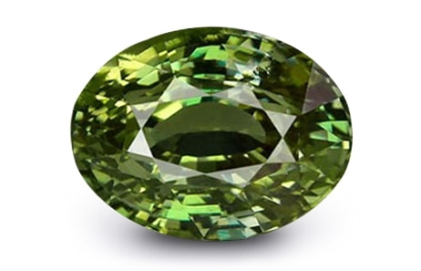
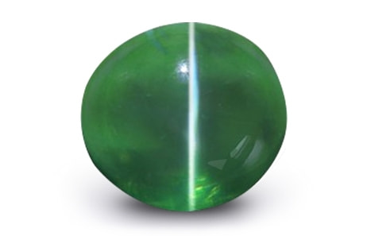

Alexandrite is a rare and highly valuable gem
variety from the Chrysoberyl mineral family
that displays a sharp change-of-color from blue-green in daylight
to red/purplish red or brownish red in the artificial yellow light.
In western astrology, it is regarded as the June month birthstone
and is majorly worn for healing and jewellery purposes.

Alexandrite Cats eye is an exclusive gemstone from the Chrysoberyl family that displays the unique optical characteristics of the two most popular Chrysoberyl gems – ‘Cats eye effect of Chrysoberyl Cats eye’ & ‘Colour-changing ability of Alexandrite'. This gemstone is rarely found in nature and is highly coveted by collectors and jewellery designers.